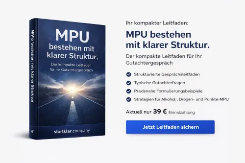

Weiterbildung zur IT Systemsicherheit (DORA) in Unternehmen
Produktprofil · Marktplatz-Daten 2026-10-13 · Verkaufsseiten-Recherche 2026-10-13 · Kategorien: Law & Justice, Profession & Job, Education
- Weiterbildung zur IT Systemsicherheit (DORA) in Unternehmen ist ein/e Mitgliederbereich & Videokurs in Law & Justice und Profession & Job, vertrieben über den Digistore24-Marktplatz von Anbieter sachkundeak, gelistet seit 2026-07-14.
- Listenpreis $36.64; Digistore24 meldet — Checkout-Konversion, — Stornierungsquote und 30 % Affiliate-Provision.
- Verdienst pro Verkauf (Affiliate): $10.99 (Anbieter-seitige Statistik, keine Prognose).
Interesse an Weiterbildung zur IT Systemsicherheit (DORA) in Unternehmen? Aktueller Preis, Boni und Garantiebedingungen finden Sie auf der offiziellen Seite des Anbieters:
Offizielle Verkaufsseite ansehen
Affiliate-Link (Werbung) — wir verdienen ggf. eine Provision, ohne Mehrkosten für Sie.

Marktplatz-Daten
| Produkttyp | Mitgliederbereich & Videokurs |
|---|---|
| Preis | $36.64 (Single payment) |
| Affiliate-Provision | 30 % |
| Garantie/Rückgabe | Laut Verkaufsseite des Anbieters — vor dem Kauf auf der offiziellen Seite prüfen |
| Anbieter | sachkundeak (gelistet seit 2026-07-14) |
| Marktplatz-Statistiken* | Checkout-Konversion — · Stornoquote — · Verdienst/Verkauf $10.99 |
* Anbieter-seitige Statistiken von Digistore24; sie hängen von der Traffic-Qualität ab und sind keine Prognose.
Marktplatz-Beschreibung des Anbieters
Geld verdienen mit Weiterbildungsangeboten – 30 % Provision mit unserer IT-Sicherheitsweiterbildung Werden Sie Affiliate für unsere Online-Weiterbildung zur IT-Systemsicherheit mit DORA-Schwerpunkt und verdienen Sie mit jeder erfolgreich vermittelten Bestellung 30 % Affiliate-Provision . IT-Sicherheit, Cyberrisiken und digitale Resilienz gehören heute zu den zentralen Herausforderungen für Unternehmen und Beschäftigte. Mit dieser Weiterbildung sprechen Sie deshalb eine breite berufliche Zielgruppe an: Selbstständige, Unternehmen, Führungskräfte, Teams und Mitarbeitende , die ihr Wissen zu Informationssicherheit, Cyberbedrohungen und sicheren digitalen Prozessen kompakt und praxisnah auffrischen möchten. Für einmalig 39,- € zzgl. USt. erhalten die Teilnehmenden Zugang zu einer modernen E-Learning-Plattform mit kompakten, aktuellen und verständlich aufbereiteten Lerninhalten . Der besonders attraktive Einstiegspreis, die hohe Aktualität des Themas und der kompakte Kursumfang schaffen ausgezeichnete Voraussetzungen für eine erfolgreiche Affiliate-Vermarktung. IT-Sicherheit kompakt, aktuell und praxisnah vermitteln Die Weiterbildung vermittelt wichtige Grundlagen der IT-Systemsicherheit verständlich und anwendungsnah. Im Mittelpunkt stehen Themen wie DORA, Cyberbedrohungen, Zugriffsrechte, Passwortsicherheit, Informationssicherheit und digitale Resilienz . Damit eignet sich der Lehrgang hervorragend zur strukturierten Auffrischung wichtiger Kenntnisse rund um moderne IT-Sicherheitsanforderungen. Für einmalig 39,- € zzgl. USt. erhalten die Teilnehmenden ein umfangreiches Weiterbildungspaket mit: 9 kompakten und praxisnahen Lektionen 2 Stunden und 5 Minuten dokumentierbarer Lernzeit 54 anspruchsvollen Lernkontrollfragen sekundengenauem Zeitnachweis Zertifikat auf Knopfdruck 365 Tagen Freischaltung ab Kauf 100 % E-Learning für Computer, Tablet und Smartphone FINBot© KI-Lernunterstützung für gezielte Fachfragen LAWBot© KI-Nachschlagewerk für rechtliche Fragestellungen Fachbuch zum Lehrgang als E-Book praxisnahen Grundlagen der IT-Systemsicherheit aktuellen Inhalten rund um DORA wichtigen Themen zu Cyberbedrohungen und Cyberrisiken Grundlagen zu Zugriffsrechten und Benutzerberechtigungen praxisnahen Inhalten zur Passwortsicherheit Themen zu Informationssicherheit und digitaler Resilienz flexibler Bearbeitung im eigenen Lerntempo Die Weiterbildung ist bewusst kompakt aufgebaut. Mit neun Lektionen und etwas mehr als zwei Stunden dokumentierbarer Lernzeit können wichtige Grundlagen der IT-Sicherheit ohne lange Schulungsprogramme aufgefrischt werden. Durch die Kombination aus E-Learning, Lernkontrollfragen, sekundengenauem Zeitnachweis, Zertifikat, FINBot©, LAWBot© und Fachbuch entsteht ein modernes digitales Weiterbildungspaket. Ein starkes Angebot für Ihre Affiliate-Vermarktung Für jede erfolgreich vermittelte Bestellung erhalten Sie 30 % Affiliate-Provision . Die Affiliate-Vergütung beträgt: 11,70 € pro erfolgreichem Verkauf Mit einem Verkaufspreis von lediglich 39,- € zzgl. USt. besitzt die Weiterbildung eine besonders niedrige Einstiegshürde und lässt sich dadurch auch gegenüber größeren beruflichen Zielgruppen attraktiv positionieren. Bereits mehrere vermittelte Teilnehmer/-innen können so zusätzliche Affiliate-Einnahmen generieren. Die IT-Sicherheitsweiterbildung eignet sich besonders gut für die Affiliate-Vermarktung, weil sie: eine breite berufliche Zielgruppe anspricht ein hochaktuelles Thema rund um IT-Sicherheit, Cyberrisiken und DORA behandelt mit 39,- € zzgl. USt. einen besonders attraktiven Einstiegspreis bietet mit nur 9 Lektionen kompakt und übersichtlich aufgebaut ist 2 Stunden und 5 Minuten dokumentierbare Lernzeit umfasst 54 Lernkontrollfragen zur Überprüfung des erworbenen Wissens enthält einen sekundengenauen Zeitnachweis ermöglicht nach Abschluss ein Zertifikat auf Knopfdruck bietet vollständig online und mobil absolviert werden kann für 365 Tage ab Kauf freigeschaltet wird mit FINBot© eine moderne KI-gestützte Lernunterstützung bietet mit LAWBot© ein zusätzliches KI-gestütztes Nachschlagewerk für rechtliche Fragestellungen integriert ein Fachbuch als E-Book als zusätzlichen Mehrwert enthält wichtige Themen zu Informationssicherheit und Cyberbedrohungen vermittelt Grundlagen rund um Zugriffsrechte und Passwortsicherheit behandelt aktuelle Anforderungen rund um DORA und digitale Resilienz aufgreift flexibel und im eigenen Lerntempo absolviert werden kann sowohl für Selbstständige als auch Unternehmen, Teams und Mitarbeitende geeignet ist Ideal für Websites, Newsletter und Social Media Die Weiterbildung eignet sich aufgrund der hohen Relevanz von IT-Sicherheit für Affiliates aus zahlreichen Bereichen, beispielsweise: IT und Informationssicherheit Digitalisierung Finanzdienstleistungen Banken und Versicherungen Unternehmensberatung Datenschutz und Compliance Risikomanagement Cybersecurity berufliche Weiterbildung Existenzgründung und Selbstständigkeit Unternehmensführung Personal und Human Resources Fachportale und Blogs Business- und Karriereportale Social-Media-Kanäle rund um IT, Finanzen, Digitalisierung und Unternehmertum Sie können die Weiterbildung über Ihre Website, Landingpages, Newsletter, Social-Media-Kanäle, Videos, Blogs oder Ihr berufliches Netzwerk empfehlen. Besonders interessant ist das Angebot für Affiliates, deren Zielgruppe aus Unternehmen, Selbstständigen, Führungskräften, Finanzdienstleistern oder Beschäftigten mit Verantwortung für digitale Prozesse besteht. Moderne Lernplattform als starkes Verkaufsargument Ein wesentlicher Vorteil bei der Vermarktung ist die Kombination aus kompaktem Kursumfang, hoher Aktualität und moderner digitaler Lerntechnologie . Die Teilnehmer/-innen erhalten nicht lediglich statische Schulungsunterlagen, sondern Zugang zu einer modernen E-Learning-Plattform , auf der die Weiterbildung flexibel und unabhängig von festen Schulungsterminen absolviert werden kann. Mit 9 Lektionen, 2 Stunden und 5 Minuten dokumentierbarer Lernzeit und 54 Lernkontrollfragen bleibt der Lehrgang kompakt und lässt sich besonders gut in den beruflichen Alltag integrieren. Der sekundengenaue Zeitnachweis dokumentiert die absolvierte Lernzeit. Nach erfolgreichem Abschluss kann ein Zertifikat auf Knopfdruck abgerufen beziehungsweise heruntergeladen werden. Mit FINBot© und LAWBot© stehen den Teilnehmenden zwei moderne KI-gestützte Lern- und Nachschlagewerkzeuge zur Verfügung. Während FINBot© bei gezielten Fachfragen unterstützt, kann LAWBot© für rechtliche Fragestellungen rund um IT-Sicherheit, regulatorische Anforderungen und Compliance genutzt werden. Das Fachbuch zum Lehrgang als E-Book ermöglicht zusätzlich eine Vertiefung der behandelten Themen. Damit lässt sich die Weiterbildung hervorragend als kompaktes, modernes und praxisnahes Weiterbildungsangebot zu IT-Systemsicherheit und digitaler Resilienz positionieren. Aktuelle Themen rund um DORA und Cyberrisiken Die zunehmende Digitalisierung macht IT-Sicherheit zu einem wichtigen Thema für Unternehmen nahezu jeder Größe. Ein besonderes Verkaufsargument dieser Weiterbildung ist deshalb die Verbindung klassischer Sicherheitsgrundlagen mit aktuellen Fragestellungen rund um DORA und digitale Resilienz . Zu den behandelten Themen gehören unter anderem: Informationssicherheit typische Cyberbedrohungen Umgang mit Cyberrisiken sichere Zugriffsrechte und Berechtigungen Passwortsicherheit organisatorische Sicherheitsmaßnahmen digitale Resilienz Grundlagen und Anforderungen rund um DORA Damit eignet sich die Weiterbildung sowohl zur grundlegenden Wissensauffrischung als auch zur Sensibilisierung von Mitarbeiterinnen und Mitarbeitern für moderne digitale Risiken. 365 Tage Freischaltung für maximale Flexibilität Nach dem Kauf erhalten die Teilnehmenden 365 Tage Zugriff auf die komplette Weiterbildung . Damit können sie die Lektionen flexibel bearbeiten, einzelne Inhalte wiederholen, Lernkontrollfragen erneut durchführen und das erworbene Wissen bei Bedarf erneut auffrischen. Gerade für Berufstätige und Unternehmen ist diese lange Freischaltung ein starkes Verkaufsargument, da die Weiterbildung unabhängig von festen Unterrichtszeiten in den Arbeitsalltag integriert werden kann. Jetzt Promolink erstellen und 11,70 € Provision pro Verkauf sichern Empfehlen Sie eine kompakte, aktuelle und preislich besonders attraktive Weiterbildung zur IT-Systemsicherheit und sprechen Sie damit eine breite berufliche Zielgruppe an. Erstellen Sie Ihren persönlichen Affiliate-Promolink, integrieren Sie ihn auf Ihrer Website, in Ihrem Newsletter oder auf Ihren Social-Media-Kanälen und erhalten Sie für jede erfolgreich vermittelte Bestellung 30 % Affiliate-Provision . Ihre Provision: 11,70 € pro erfolgreicher Bestellung Produktpreis: 39,- € zzgl. USt. Affiliate-Provision: 30 % Provision je Verkauf: 11,70 € Freischaltung: 365 Tage ab Kauf Kursumfang: 9 Lektionen · 2 Std. 5 Min. Lernzeit · 54 Lernkontrollfragen Digistore24 Produkt-ID: 711552 9 Lektionen, 2 Std. 5 Min. dokumentierbare Lernzeit, 54 Lernkontrollfragen, Zertifikat, FINBot©, LAWBot©, Fachbuch als E-Book, 365 Tage Freischaltung und 30 % Affiliate-Provision – ideale Voraussetzungen, um mit der Vermittlung einer modernen IT-Sicherheitsweiterbildung zusätzliche Einnahmen zu erzielen.
Von der Verkaufsseite des Anbieters
Seitentitel: Digistore24 – Weiterbildung zur IT Systemsicherheit (DORA) - Sachkunde-Akademie
Hauptüberschrift
Digitale Wissensauffrischung zur IT-Systemsicherheit (DORA)
Abschnitts-Überschriften
- Ihr digitales Selbstlernangebot auf einen Blick
- Selbstlernangebotsparameter auf einen Blick
- IT-Systemsicherheit eigenständig und flexibel auffrischen
- 9 digitale Lerneinheiten für den eigenständigen Wissenserwerb
- IT-Sicherheitswissen eigenständig auffrischen
- Häufige Fragen zum digitalen Selbstlernangebot
- Digitale Inhalte zur IT-Systemsicherheit flexibel nutzen
- Kontakt
- Recht Co.
- Seitenbereiche
Einstiegstext
Nutzen Sie 9 kompakte digitale Lerneinheiten mit einer vorgesehenen Bearbeitungszeit von insgesamt 2 Stunden und 5 Minuten. Ergänzend stehen 54 optionale Selbstkontrollfragen zur persönlichen Wiederholung, ein FINBOT-Nachschlagewerk und ein Fachbuch als E-Book zur Verfügung.
Die digitalen Inhalte vermitteln allgemeine Informationen zu DORA, IT-Risiken, Cyberbedrohungen, Datenschutz, Zugriffsrechten, sicheren Passwörtern, technischen Schutzmaßnahmen und digitaler Resilienz. Die Nutzung erfolgt vollständig eigenständig und ohne individuelle fachliche oder pädagogische Betreuung.
9 Lerneinheiten mit jeweils etwa 10 bis 15 Minuten vorgesehener Bearbeitungszeit ermöglichen eine flexible Wissensauffrischung.
Die Inhalte sind digital verfügbar, für mobile Endgeräte optimiert und können eigenständig im persönlichen Tempo genutzt werden.
Recherche-Methode: rohes HTML · 1590 Wörter · Qualität: rich · recherchiert am 2026-10-13. Vollständige Recherche-Datei (MD) ↗
Wie Produkte dieser Art geliefert werden
Allgemeiner Hinweis zu diesem Produkttyp (keine anbieterspezifische Anleitung): Videokurse laufen über einen Mitgliederbereich: nach dem Checkout erhalten Sie Zugangsdaten per E-Mail und können die Lektionen in Ihrem eigenen Tempo streamen. Für die genaue Anwendung von Weiterbildung zur IT Systemsicherheit (DORA) in Unternehmen sind die offizielle Verkaufsseite und die enthaltenen Materialien maßgeblich.
Gut zu wissen
- Keine Garantie-Formulierung in unserer Recherche gefunden — bestätigen Sie das Rückgabefenster auf der offiziellen Seite, bevor Sie kaufen.
- Marktplatz-Zahlen (Preis, Provision, Konversion, Stornoquote) — Quelle: offizielle Digistore24-Marktplatz-API (Affiliate-Sicht), Stand 2026-10-13. Gegenprüfung: Marktplatz-Suche nach Produkt-ID 711552.
- Verkaufsseiten-Zitate — Quelle: https://sachkundelehrgaenge.de/digistore24-weiterbildung-zur-it-systemsicherheit-dora/, abgerufen 2026-10-13 (Methode: rohes HTML). Verify: offizielle Seite öffnen.
- Garantie / Rückgabe — vom Anbieter festgelegt; vor dem Kauf auf der Verkaufsseite bestätigen.
- Nicht von uns geprüft: Produktqualität, Ergebnisse, Testimonials — kein Praxistest für dieses Listing durchgeführt.
Häufige Fragen zu Weiterbildung zur IT Systemsicherheit (DORA) in Unternehmen
Antworten aus dem Marktplatz-Snapshot (2026-10-13) und der Verkaufsseiten-Recherche (2026-10-13); Anbieteraussagen sind inline gekennzeichnet.
Was ist Weiterbildung zur IT Systemsicherheit (DORA) in Unternehmen?
Weiterbildung zur IT Systemsicherheit (DORA) in Unternehmen ist ein Angebot des Typs „Mitgliederbereich & Videokurs" im Digistore24-Marktplatz, Anbieter: sachkundeak, gelistet seit 2026-07-14. Eingepflegt unter Recht & Gerechtigkeit und Beruf & Karriere. Digistore24 wickelt Checkout, Lieferung und Rückgaben ab.
Wie viel kostet Weiterbildung zur IT Systemsicherheit (DORA) in Unternehmen?
Der Digistore24-Marktplatz listet es für $36.64 (single payment). Preise legt der Anbieter fest und können sich ändern — der Marktplatz-Eintrag oben zeigt den Schnappschuss; die offizielle Verkaufsseite zeigt den aktuellen Preis.
Gibt es eine Geld-zurück-Garantie für Weiterbildung zur IT Systemsicherheit (DORA) in Unternehmen?
Unsere Verkaufsseiten-Recherche hat keine explizite Garantie-Formulierung gefunden. Viele Digistore24-Produkte bieten 60 Tage Geld-zurück, aber das legt jeder Anbieter selbst fest — bestätigen Sie es auf der offiziellen Verkaufsseite, bevor Sie kaufen.
Ist Weiterbildung zur IT Systemsicherheit (DORA) in Unternehmen seriös?
Wir bewerten keine Seriosität — wir veröffentlichen überprüfbare Zahlen: Anbieter sachkundeak (gelistet seit 2026-07-14), Checkout-Konversion —, Stornoquote —, Affiliate-Verdienst/Verkauf $10.99 (alles Anbieter-seitige Marktplatz-Statistiken). Lesen Sie unsere 6-Punkte-Bewertungsmethode und entscheiden Sie anhand der Zahlen — oder diskutieren Sie Weiterbildung zur IT Systemsicherheit (DORA) in Unternehmen auf GitHub.
Wo kann ich Weiterbildung zur IT Systemsicherheit (DORA) in Unternehmen sicher kaufen?
Nur über die offizielle Verkaufsseite, die auf dieser Seite verlinkt ist (Checkout und Rückgaben laufen über Digistore24). Prüfen Sie dort Preis und Garantie vor der Bestellung. Der Link ist ein Affiliate-Link — der Kauf unterstützt diese Website ohne Mehrkosten für Sie.
Wie erhalte ich Weiterbildung zur IT Systemsicherheit (DORA) in Unternehmen nach der Zahlung?
Der Checkout läuft über Digistore24: Nach der Zahlung erhalten Sie Ihren Zugang oder Download per E-Mail und in Ihrem Digistore24-Kundenkonto. Lieferdetails für diesen Produkttyp: Videokurse laufen über einen Mitgliederbereich: nach dem Checkout erhalten Sie Zugangsdaten per E-Mail und können die Lektionen in Ihrem eigenen Tempo streamen. Bei Problemen kann der Digistore24-Käufersupport Ihre Bestellung wiederherstellen.
Alle 50 Käuferfragen zu Recht & Gerechtigkeit — das komplette Kategorie-FAQ.
Weiterbildung zur IT Systemsicherheit (DORA) in Unternehmen auf Reddit diskutieren
In Community-Threads vergleichen echte Käufer Erfahrungen. Wir verlinken Communities, keine einzelnen Posts — Threads verschwinden, Subreddits bleiben:
- r/arbeitsleben — deutschsprachige Community mit Diskussionen zu law & justice.
- Reddit-Suche nach „Weiterbildung zur IT Systemsicherheit (DORA) in Unternehmen" — Live-Ergebnisse, von uns nicht beeinflusst.
- Top-„Erfahrungs"-Treffer dieses Jahr — selbst nach Aktualität filtern.
Passendes auf Amazon.de
Physische Produkte und Zubehör, die häufig zusammen mit Weiterbildung zur IT Systemsicherheit (DORA) in Unternehmen gekauft werden:
- Law & Justice auf Amazon.de — Top-Ergebnisse, Amazon-Ranking.
- Bestseller: Law & Justice — live Liste von Amazon, von uns nicht kuratiert.
Werbung: Als Amazon-Partner verdient DigistorePicks DE an qualifizierten Käufen (Partner-tag adminstorede-21). Amazon setzt eigene Preise und Provisionen (niedrige einstellige Prozente — weit unter den 30–75% der Digistore24-Anbieter). Amazon ist ein Convenience-Angebot für Sachprodukte, kein Ersatz für das digitale Produkt oben.
Ähnliche Angebote in Recht & Gerechtigkeit

Ihr Individuelles Gefahrstoffkataster – Ihr sicherer Weg zur Compliance Jedes Unternehmen, das mit Gefahrstoffen arbeitet, ist gesetzlich verpflichtet, eine vol

Bewerben Sie jetzt die umfangreichste Word Lösung zum Thema DSGVO! Die Excel Datei beinhaltet nicht nur ein vorausgefülltes Verzeichnis von Verarbeitungstätigke

Bewerben Sie jetzt die umfangreichste Excel Lösung zum Thema DSGVO! Die Excel Datei beinhaltet nicht nur ein vorausgefülltes Verzeichnis von Verarbeitungstätigk

Geld verdienen mit Weiterbildungsangeboten – 25 % Provision mit unserem IHK-Vorbereitungskurs nach § 34k GewO Werden Sie Affiliate für unseren Prüfungsvorbereit
Weitere Angebote von sachkundeak
Gesamtes Sortiment: sachkundeak Anbieter-Hub — alle Listings mit Marktplatz-Daten.
Geld verdienen mit Weiterbildungsangeboten – 25 % Provision mit unserem IHK-Vorbereitungskurs nach § 34k GewO Werden Sie Affiliate für unseren Prüfungsvorbereit

Geld verdienen mit Weiterbildungsangeboten – 25 % Provision mit unserem IHK-Vorbereitungskurs nach § 26a WEG Werden Sie Affiliate für unseren Prüfungsvorbereitu

Geld verdienen mit Weiterbildungsangeboten – 25 % Provision mit unserem IHK-Vorbereitungskurs für Immobilienmakler/-innen Werden Sie Affiliate für unseren Prüfu

Geld verdienen mit Weiterbildungsangeboten – 30 % Provision mit unserer freiwilligen Weiterbildung für Immobilienmakler/-innen Werden Sie Affiliate für unsere O
Weiterbildung zur IT Systemsicherheit (DORA) in Unternehmen ist auch gelistet in
Beruf & Karriere (507 Produkte) · Bildung (597 Produkte)
Ähnliche Preislage in Recht & Gerechtigkeit

Identitätsdiebstahl Soforthilfe – Rechtssicheres Notfallpaket zum Download Ein Top-Seller im wachsenden Markt für digitale Sicherheit & Verbraucherschutz! D

Die Arbeitsschutzfalle – bereit für jede Prüfung Viele Unternehmen glauben, beim Arbeitsschutz gut aufgestellt zu sein – bis plötzlich eine behördliche Prüfung,

Die Medizinisch-Psychologische Untersuchung (MPU) ist für viele der letzte Schritt, um den Führerschein zurückzubekommen – doch ohne richtige Vorbereitung falle

SPURLOS VERSCHWINDEN "Delete" und "Reset" - Neustart Ihres Lebens, die drastische Lösung, die Sie hoffentlich nie brauchen. Wie es heute noc
Ähnliche Suchanfragen
Wo Sie es sich ansehen können
Wo Sie es sich ansehen können
Aktuelle Preise, Garantie und Boni finden Sie auf der offiziellen Verkaufsseite:
Offizielle Verkaufsseite ansehen
Das ist ein Affiliate-Link (Werbung) — kaufen Sie darüber, verdienen wir ggf. eine Provision, ohne Mehrkosten für Sie.
Quellen & weiterführende Informationen
- Offizielle Verkaufsseite (aktueller Preis, Garantie, Boni): sachkundelehrgaenge.de/digistore24-weiterbildung-zur-it-syst (Affiliate-Link)
- Öffentliche Digistore24-Produktseite: checkout-ds24.com/product/711552
- Vollständige Recherche-Datei (Markdown, versioniert): content/products/57522-weiterbildung-zur-it-systemsicherheit-dora-in-unternehmen.md
- Affiliate-Supportseite des Anbieters: sachkundelehrgaenge.de/bewerben-sie-den-kompakten-onlinekurs
- Marktplatz-Kategorie: Recht & Gerechtigkeit
Wie wir Produkte wie Weiterbildung zur IT Systemsicherheit (DORA) in Unternehmen bewerten
Sechs Prüfungen, ausschließlich mit offiziellen Marktplatz-Zahlen. Die vollständige Bewertungsmethode lesen · unsere Recherche-Standards & Kennzeichnung.
Fragen oder eigene Erfahrungen mit Weiterbildung zur IT Systemsicherheit (DORA) in Unternehmen?
Praxis-Tests veröffentlichen wir erst, nachdem wir ein Produkt selbst gekauft haben — aber Ihre Erfahrung hilft anderen Lesern: Diskussion zu Weiterbildung zur IT Systemsicherheit (DORA) in Unternehmen auf GitHub starten/verfolgen. Falsche Zahl gefunden? Korrektur melden — jede Seite zeigt ihre Datenstände, Korrekturen gelten für die ganze Website.